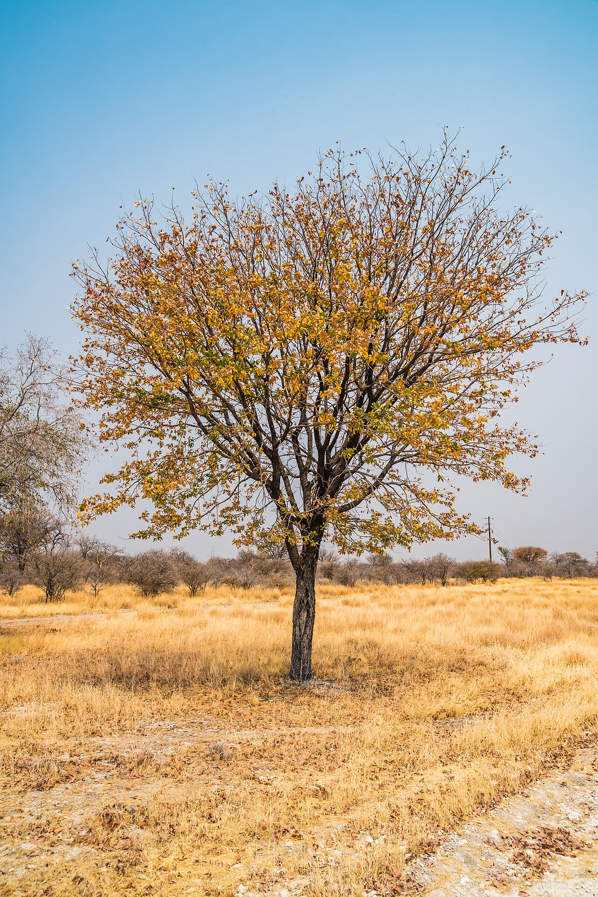
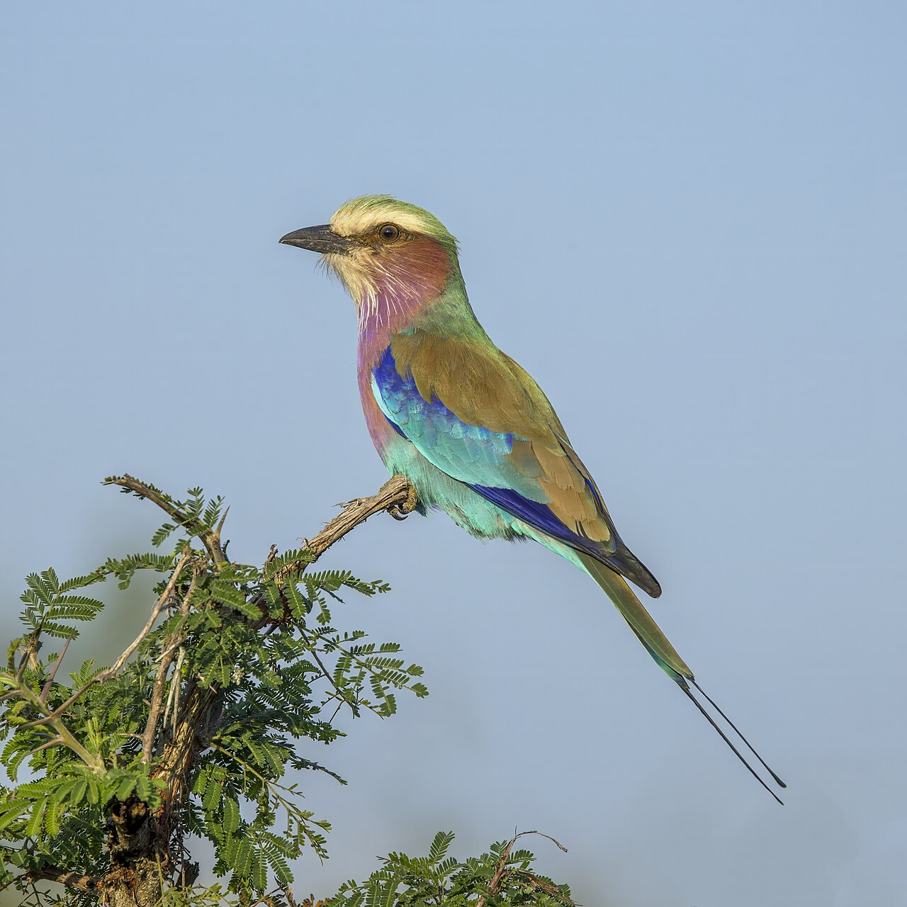
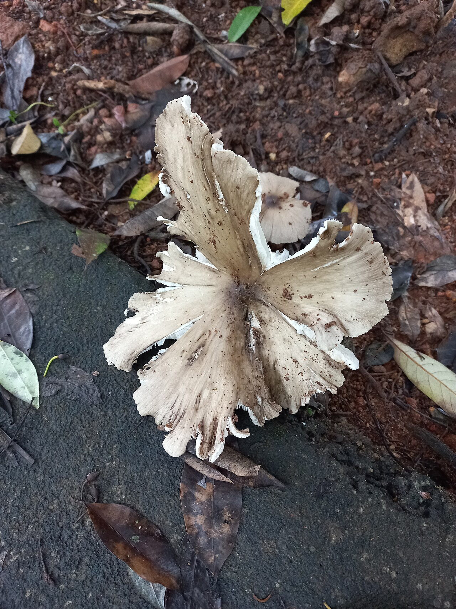

The Miombo and Mopane Africa's great dry woodlands
Across the heart and south of Africa stretches the largest dry-forest formation on the continent – the miombo woodlands of Brachystegia and Julbernardia, and the mopane woodlands of the hot, dry valleys. A fire-shaped, seasonally green world of caterpillars and honey, elephants and sable, that feeds and fuels well over a hundred million people – and where much of this Programme actually works.
≈ 3 million km²~11 countries · southern AfricaDry tropical woodland & savanna100–150 million peopleBrachystegia · Colophospermum mopane
Miombo woodland on the Niassa Plateau, Mozambique – the broad, layered canopy of Brachystegia and Julbernardia over a grassy, fire-swept understorey that defines Africa's largest dry forest.
Photo: Lichinga, CC BY-SA 4.0, via Wikimedia Commons
Biome profile · At a glanceWhat the miombo and mopane are
The miombo and mopane are the great dry woodlands of southern Africa – together the largest dry-forest formation on the continent and the dominant land cover of the sub-continent. The miombo is a broad-leaved, fire-shaped woodland on nutrient-poor soils; the mopane is the hotter, lower, drier woodland of a single dominant tree. Both are working landscapes that feed, fuel and shelter tens of millions of people (Frost, 1996; Ryan et al., 2016).
Extent
≈ 3 M
km² – miombo ~2.7M + mopane ~0.5M
Countries
~11
central & southern Africa
People
100–150 M
depend on these woodlands
Biome type
Woodland
dry tropical woodland & savanna
Defining trees
2 groups
Brachystegia/Julbernardia · C. mopane
Programme link
6+
DSL-IP countries lie within it
In one sentence
The miombo–mopane is Africa's great dryland forest – a fire- and drought-shaped mosaic of broad-leaved Brachystegia woodland and single-species mopane, spanning a dozen countries, storing vast amounts of carbon, and sustaining over a hundred million people through wood, honey, mushrooms, caterpillars and grazing (Ryan et al., 2016).
Place and climateWhere they are – two woodlands, one region
The miombo belt sweeps across central-southern Africa – from Angola and the southern Democratic Republic of the Congo through Tanzania, Zambia, Malawi and Zimbabwe into northern Mozambique. The mopane occupies the hotter, lower, drier ground within and below it: the Zambezi and Limpopo valleys, the Caprivi, northern Botswana and Namibia, and southern Angola. Together they form a near-continuous dryland-forest region across roughly a dozen countries (Campbell, 1996; Ryan et al., 2016).
The miombo–mopane belt (in green) across central and southern Africa – schematic locator.

A mopane tree (Colophospermum mopane) in Namibia – in the hotter, drier country, a single species can dominate the woodland from low shrubveld to tall “cathedral mopane.”
Photo: Tim Brunauer / GIZ, CC BY-SA 4.0, via Wikimedia Commons
Names from the trees
“Miombo” is the Swahili and Bemba name for the dominant Brachystegia trees; “mopane” (or mopani) is the name of the single tree – Colophospermum mopane – that defines the second woodland. Both are deciduous: they drop or fold their leaves to survive the long dry season, and flush a brilliant red-and-green canopy in the weeks before the rains.
Miombo – the wetter, poorer woodland
Broad-leaved Brachystegia–Julbernardia woodland on dystrophic (nutrient-poor, leached, acidic) soils, with higher rainfall (broadly 700–1,400 mm). Trees fix nitrogen and partner with mycorrhizal fungi to thrive where soils are thin (Frost, 1996).
Mopane – the hotter, richer woodland
Dominated by a single tree on eutrophic (clay-rich, often sodic) soils in hotter, drier, lower country (broadly 400–700 mm). Its butterfly-shaped leaves fold in the heat to cut water loss; elephants and mopane worms depend on it.
One wet season, shaped by fire
Rainfall is unimodal – a single summer wet season (roughly November–April) and a long dry season. Fire sweeps through most years; the woodland is fire-adapted, and seasonal wetlands (dambos) hold water and dry-season gardens (Frost, 1996).
BiodiversityLife in the woodland
The miombo is far richer than its thin soils suggest – on the order of 8,500 plant species, more than half of them found nowhere else (Frost, 1996), alongside a celebrated large-mammal fauna and so many restricted-range birds that it is recognised as an Endemic Bird Area (Stattersfield et al., 1998). The mopane, though dominated by one tree, teems with the life that tree supports – above all the elephant and the mopane worm.
Msasa (Brachystegia spiciformis) – a defining miombo tree. Photo: SAplants, CC BY-SA 4.0Mopane (Colophospermum mopane) – the “butterfly” leaves that fold in the heat. Photo: Roger Culos, CC BY-SA 3.0Sable antelope (Hippotragus niger) – an emblem of the miombo. Photo: Charles J. Sharp, CC BY-SA 4.0

Lilac-breasted roller (Coracias caudatus) – one of the region's many woodland birds. Photo: Charles J. Sharp, CC BY-SA 4.0African elephant (Loxodonta africana) – mopane is a favourite food and the woodland's great shaper. Photo: Bernard Gagnon, CC BY-SA 4.0
The miombo trees Brachystegia · Julbernardia · Isoberlinia
A handful of related legume trees dominate the canopy. Most are nitrogen-fixing and mycorrhizal, letting a tall woodland grow on famously poor soils. Their synchronous red-gold flush before the rains is one of Africa's great seasonal sights.
The mopane tree Colophospermum mopane
From low scrub (“mopane shrubveld”) to tall “cathedral mopane,” this single species can blanket whole valleys. Its leaves and pods are vital dry-season browse, and its wood is dense, termite-resistant and prized.
A great mammal fauna
Elephant, sable and roan antelope, hartebeest, eland, buffalo, lion and the endangered African wild dog all range here. The woodland's mix of cover and grazing supports some of Africa's most important large-mammal populations.
The mopane worm Gonimbrasia belina
The caterpillar of an emperor moth, harvested in millions of kilograms each year. More than wildlife, it is a food and a livelihood – one of the woodland's most valuable products (Nemadodzi et al., 2023; see People).
Live biodiversity dataThe woodland, as recorded by its naturalists
This dashboard draws live from community-science projects covering the Miombo and Mopane on iNaturalist – spanning the Angolan miombo and mopane, the Namibian mopaneveld and the region's edible miombo mushrooms. Every figure refreshes as naturalists upload and identify what they find.
The miombo and mopane are home and larder to well over a hundred million people – on the order of 100 million rural and 50 million urban dwellers (Ryan et al., 2016). Rural families farm the better soils, graze livestock in the woodland, and draw a remarkable range of products from the trees themselves – energy, protein, sweetness and medicine (Dewees et al., 2010). In much of the miombo core, society is matrilineal, and rights to land and trees pass through women.
The mopane worm (Gonimbrasia belina) – harvested, dried and traded as a protein staple across the region. Photo: Bernard Dupont, CC BY-SA 2.0

Termitomyces – one of the prized wild edible mushrooms gathered from the woodland in the rains. Photo: Daizy John, CC BY-SA 4.0
The woodfuel of a region
Miombo and mopane supply the firewood and charcoal that cook for most of the region's households and cities. It is the woodland's biggest commercial product – and, cut unsustainably, its biggest threat (Ryan et al., 2016; FAO, 2017).
Mopane worms and caterpillars
Edible caterpillars – the mopane worm above all – are a seasonal protein harvest and a cash crop, gathered and traded largely by women (Nemadodzi et al., 2023).
Honey, mushrooms and medicine
The miombo is famous for its honey (the bark-hive belts of Tabora and Zambia), its wild mushrooms (Termitomyces, Cantharellus) and a deep pharmacopoeia of medicinal trees and roots (Dewees et al., 2010).
Farming the woodland
Families clear and rotate small fields – the chitemene shifting system of the Zambian miombo among them – and farm the moist dambos in the dry season. Livestock browse the standing woodland year-round (Campbell, 1996).
A landscape of harvest
Like the Caatinga in Brazil, the miombo–mopane is not a wilderness but a working dryland forest – its value to people lies as much in the standing woodland (wood, worms, honey, browse, medicine) as in the land it could be cleared for. That is exactly the balance sustainable management has to strike.
ThreatsPressures on the woodlands
The miombo–mopane is among the most rapidly cleared and degraded woodland regions on Earth, losing forest every year to a familiar, compounding set of drivers – and releasing the carbon it holds as it goes (McNicol et al., 2018).
Charcoal and fuelwood – surging urban demand drives unsustainable cutting around every growing city (FAO, 2017).
Agricultural expansion – clearing for cropland and, in places, tobacco curing, which burns large volumes of wood.
Uncontrolled late-season fire – hot, late dry-season fires that damage the canopy and the seedbank.
Mining and infrastructure – especially across the Copperbelt and mineral-rich miombo of the centre.
Overgrazing and elephant impact – locally heavy pressure on mopane and on regeneration.
Climate change – hotter, more erratic seasons stress an already drought-shaped system.
Charcoal for sale on a Zambian roadside – the woodland's largest commercial product and, cut faster than it regrows, its single biggest pressure.
Photo: Thatlowdownwoman, CC BY-SA 4.0, via Wikimedia Commons
Why it adds up fast
Because miombo regrows slowly on poor soils, and because demand for charcoal rises with every city, clearance easily outpaces regrowth. The result is steady deforestation, biodiversity loss and carbon emissions across a region whose woodlands are also one of its greatest assets (McNicol et al., 2018).
Restoration and sustainable useManaging the woodland – and bringing it back
The miombo–mopane does not have to be cleared to be used. Its trees coppice and regenerate readily from stumps and roots, so the proven path is to manage the standing woodland on a cycle and to make it pay more alive than dead (Frost, 1996; Dewees et al., 2010). Southern Africa has built some of the world's strongest community-forestry models doing exactly that.
Community-based forest management
Tanzania's Participatory and Community-Based Forest Management (PFM/CBFM) hands villages the rights and revenue to manage their woodland – one of Africa's flagship models for keeping miombo standing (Blomley & Iddi, 2009).
Farmer-managed natural regeneration
Protecting and pruning the coppice and seedlings that resprout across farmland – the cheapest, fastest way to bring woodland back, proven across the world's drylands.
Beekeeping and honey value chains
Miombo honey gives a standing-forest income that rewards keeping the trees – the bark-hive and box-hive belts of Tanzania and Zambia are a model NTFP enterprise.
Sustainable charcoal and energy
Licensed, rotation-based wood supply with improved kilns and clean cookstoves – cutting the wood needed per bag and the pressure on the woodland.
Fire and mopane-worm management
Planned early-season burning to pre-empt destructive late fires, and community rules that keep the mopane-worm harvest within sustainable limits.
Carbon, woodlots and restoration
REDD+ and restoration finance, plus village woodlots of fast-growing and native trees, take pressure off natural woodland and reward regrowth.
Tanzania's community forests – a model that travels
Across Tanzania, millions of hectares of miombo are now under village-managed Community-Based Forest Management, with communities holding the rights to harvest, sell and protect their woodland (Blomley & Iddi, 2009). It is a working answer to the question every dryland forest faces – how to let people use the forest while keeping it – and a natural reference for South–South exchange.
Technologies and approachesManaging the miombo–mopane sustainably
Where the restoration toolkit above is the regional state of the art, this catalogue is the DSL-IP's own programme of work in the ecoregion – the SLM and SFM technologies and value-chain approaches it is championing, country by country. It is drawn directly from the Programme's core themes: under the “one country, one core theme” model, each champion country develops a single theme – identified through ILAM evidence and integrated through the SLPF pillars – and shares it across a cross-learning group of peers through the Regional Exchange Mechanism.
The founding principle – one country, one core theme
Rather than dispersing effort, each country champions a single, nationally significant theme that is regionally transferable across the miombo–mopane. Together they answer southern Africa's three shared challenges – declining productivity under rising pressure on the dryland forest, weak integrated extension, and limited market access and sustainable finance. Each turns the standing woodland and its drought-hardy crops into income, so the forest is worth more managed than cleared.
The country core themes
The southern-African (miombo–mopane) cluster of the DSL-IP, with each country's championed theme and the income opportunity behind it.
Country champion
Core theme – SLM / SFM
Value chain / income opportunity
Malawi
Integrated Energy and Food Systems (IFES)
Pigeon pea & maize intercropping; fuel-efficient stoves
Conservation-compatible livelihoods in buffer zones
After the DSL-IP / REM country core-themes table (selected southern-African entries; some themes to be confirmed through MEL consultations). NUS = neglected and underutilized species; NWFP = non-wood forest products. Full table on the Regional Exchange Mechanism.
1 · Integrated energy and food systems (IFES)
Malawi's championed theme – closing the loop between food, soil and household energy on the same plot (the Sisteminha–IFES model).
Pigeon pea – maize intercropping
A nitrogen-fixing legume grown with the staple cereal – food, fodder and fertility from one field, with a second harvest and better soil for the next season.
Fuel-efficient stoves & biogas
Clean, efficient cooking and on-farm energy that cut the woodfuel a household draws from the woodland – the “energy” half of IFES.
The region runs on miombo charcoal and firewood; the issue is not whether the wood is cut but how. Namibia's theme turns a problem – encroaching invasive bush – into a certified product.
FSC-certified charcoal from invasive bush (Namibia) – harvesting bush-encroaching species under Forest Stewardship Council certification restores rangeland and creates a legal, premium value chain.
Licensed, rotation-based wood supply with improved kilns and clean cookstoves – cutting the wood needed per bag and the pressure on standing woodland.
Community-based forest management – Tanzania's village CBFM model (see Restoration) gives communities the rights and revenue to keep the miombo standing.
3 · Miombo honey and sustainable beekeeping
Tanzania's championed theme – a classic non-wood forest product that pays for keeping the trees.
Bark- and box-hive honey
The honey belts of Tabora and the Zambian miombo turn flowering woodland into a standing-forest income – the more trees, the more honey.
Apiaries as forest guardians
Bee forage ties household income directly to canopy cover, aligning livelihoods with conservation and pollinating crops and wild trees alike.
4 · Neglected & underutilized species (NUS) and native value chains
Drought-hardy indigenous crops and wild products – the heart of several country themes – that diversify diets and income while needing little water (Angola, Botswana, Zimbabwe, Namibia).
Drought-hardy grains & pulses
Bambara groundnut, Morama bean, finger and pearl millet, pigeon pea, hyacinth and African yam bean – resilient species adapted to poor rains, anchoring food security in the dry woodland.
Baobab and marula Adansonia · Sclerocarya
Zimbabwe's SFM theme – fruit, oil and kernels from iconic standing trees, processed into high-value, certifiable products.
Mopane worm and wild harvests
The mopane worm, wild mushrooms and medicinal trees – seasonal protein and cash, gathered and traded largely by women.
5 · Rangeland, grazing and drought management
Working the woodland with livestock without grazing it bare – an agro-sylvo-pastoral approach shared with the Programme's drylands cross-learning groups.
Sustainable grazing and pasture management – rotation and rest that let the grass-and-browse layer recover, with the standing woodland as dry-season browse.
Drought management and resilient seed systems – drought-tolerant varieties and community seed security to buffer the long, single dry season.
Agro-sylvo-pastoral value chains – integrating trees, grazing and crops, transferable from the REM rangeland cross-learning cluster (Kenya, Burkina Faso).
6 · Protected areas, buffer zones and connectivity
Mozambique's championed theme – pairing a protected core with sustainable use in the buffer, the connective tissue of a working landscape.
Protected-area and buffer-zone management – conservation-compatible livelihoods around reserves, so people and wildlife share the woodland.
Corridors and transboundary connectivity – linking fragments across borders in one of Africa's great large-mammal regions.
Fire and harvest rules – early-season burning and community limits on the mopane-worm and fuelwood harvest (see Restoration).
7 · The enabling environment
The cross-cutting approaches that let any technology scale and endure – the “how” behind every theme.
Integrated land-use planning – turning ILAM evidence into village and national land-use plans for Land Degradation Neutrality.
Gender-responsive approaches – the Global Gender Action Plan and gender-responsive land-use planning, since women lead much of the woodland harvest.
FFPOs and South–South exchange – producer organisations and the REM cross-learning groups that move a proven theme from one country to its peers.
Each theme is a working answer to a shared problem – proven in one country and designed to travel. Captured with WOCAT, integrated through the SLPF and exchanged through the REM, the seven families above are how the DSL-IP turns the miombo–mopane from a woodland under pressure into a network of productive, sustainably managed landscapes.
The DRIP connectionWhy the miombo and mopane matter here
Unlike the Caatinga, the miombo–mopane is not outside the Programme – it is where much of it works. Several of the eleven DSL-IP child projects sit squarely within this belt: Angola, Botswana, Malawi, Mozambique, Tanzania and Zimbabwe. The biome is, in every sense, the African heartland of the dryland-forests agenda.
Open miombo woodland – the kind of working dryland forest the Programme exists to keep standing and productive across southern Africa. Photo: Geoff Gallice, CC BY 2.0, via Wikimedia Commons
01
The Programme's home ground
Six or more DSL-IP child projects lie in the miombo–mopane – the biome where the Programme's methods are applied at scale.
02
A textbook dryland forest
Seasonally dry, fire-shaped, agrosilvopastoral – a living case study in dryland forest management and Land Degradation Neutrality.
SourcesFurther reading, data and a note on figures
This profile is a knowledge and outreach summary compiled for DRIP from widely cited public sources. Figures for the miombo–mopane – its area, population and species totals – vary by source and mapping method; the values here are rounded approximations meant for orientation, not official statistics.
Photographs on this page are reproduced from Wikimedia Commons under the Creative Commons licences shown. Each remains the work of its author; no endorsement is implied.
Dewees, P. A., Campbell, B. M., Katerere, Y., Sitoe, A., Cunningham, A. B., Angelsen, A., & Wunder, S. (2010). Managing the miombo woodlands of southern Africa: Policies, incentives and options for the rural poor. Journal of Natural Resources Policy Research, 2(1), 57–73. https://doi.org/10.1080/19390450903350846
Food and Agriculture Organization of the United Nations. (2017). The charcoal transition: Greening the charcoal value chain to mitigate climate change and improve local livelihoods (J. van Dam, Author). FAO. https://www.fao.org/3/a-i6935e.pdf
McNicol, I. M., Ryan, C. M., & Mitchard, E. T. A. (2018). Carbon losses from deforestation and widespread degradation offset by extensive growth in African woodlands. Nature Communications, 9, 3045. https://doi.org/10.1038/s41467-018-05386-z
Nemadodzi, L. E., Managa, G. M., & Prinsloo, G. (2023). The use of Gonimbrasia belina (Westwood, 1849) and Cirina forda (Westwood, 1849) caterpillars (Lepidoptera: Saturniidae) as food sources and income generators in Africa. Foods, 12(11), 2184. https://doi.org/10.3390/foods12112184
Ryan, C. M., Pritchard, R., McNicol, I., Owen, M., Fisher, J. A., & Lehmann, C. (2016). Ecosystem services from southern African woodlands and their future under global change. Philosophical Transactions of the Royal Society B: Biological Sciences, 371(1703), 20150312. https://doi.org/10.1098/rstb.2015.0312
Stattersfield, A. J., Crosby, M. J., Long, A. J., & Wege, D. C. (1998). Endemic bird areas of the world: Priorities for biodiversity conservation (BirdLife Conservation Series No. 7). BirdLife International. https://portals.iucn.org/library/node/25865